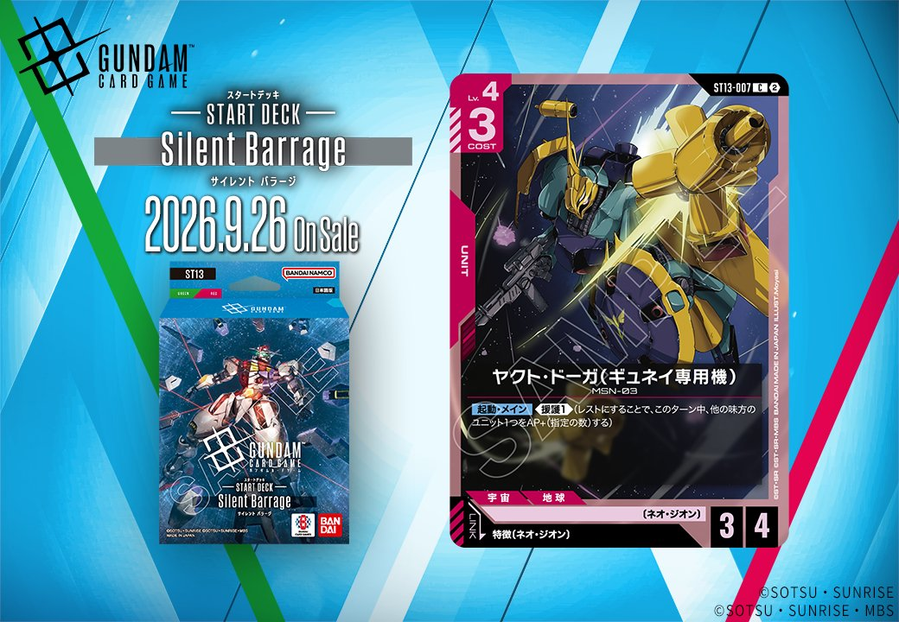

ST13「Rebellion Fang(リベリオン ファング)」に収録される、赤のUNIT「ヤクト・ドーガ(ギュネイ専用機)」(ST13-007)を紹介します。特徴にネオ・ジオンを持つPILOTとのリンクを備えたカードで、発売日は2026年9月26日です。

ヤクト・ドーガ(ギュネイ専用機) (ST13-007)
| 色 | 赤 | タイプ | UNIT |
| Lv | 4 | コスト | 3 |
| AP | 3 | HP | 4 |
| 特徴 | 〔ネオ・ジオン〕 | ||
| リンク条件 | 特徴にネオ・ジオンを持つPILOT | ||
効果: 【起動・メイン】《援護1》(レストにすることで、このターン中、他の味方のユニット1つをAP+(指定の数)する)
ヤクト・ドーガ(ギュネイ専用機)はCOST3でAP3/HP4と平均的なステータスに、【起動・メイン】《援護1》を備えた赤のネオ・ジオンユニットです。自身をレストにすることで他の味方ユニットのAPを1上げられるため、シナンジュ(ST03-001)のようなアタッカーの打点補助として運用できます。 リンク先は特徴にネオ・ジオンを持つパイロットで、フル・フロンタル(ST03-010)やマリーダ・クルス(GD01-093)を搭載できる点も噛み合います。2026-09-26発売のST13収録カードです。


関連カード
-
 資源衛星パラオ(GD01-128)赤系デッキ内採用率13.8% (689デッキ)
資源衛星パラオ(GD01-128)赤系デッキ内採用率13.8% (689デッキ) -
 フル・フロンタル(ST03-010)赤系デッキ内採用率8.3% (414デッキ)
フル・フロンタル(ST03-010)赤系デッキ内採用率8.3% (414デッキ) -
 マリーダ・クルス(GD01-093)赤系デッキ内採用率7.5% (373デッキ)
マリーダ・クルス(GD01-093)赤系デッキ内採用率7.5% (373デッキ) -
 クシャトリヤ(GD01-044)赤系デッキ内採用率7.5% (371デッキ)
クシャトリヤ(GD01-044)赤系デッキ内採用率7.5% (371デッキ) -
 シナンジュ(ST03-001)赤系デッキ内採用率7.3% (362デッキ)
シナンジュ(ST03-001)赤系デッキ内採用率7.3% (362デッキ) -
 ハマーン・カーン(ST13-011)NEW緑系 — リンク対象（ネオ・ジオン PILOT）（新カード）
ハマーン・カーン(ST13-011)NEW緑系 — リンク対象（ネオ・ジオン PILOT）（新カード） -
 マリーダ・クルス(GD01-093_p1)赤系デッキ内採用率0% (0デッキ)
マリーダ・クルス(GD01-093_p1)赤系デッキ内採用率0% (0デッキ) -
 マリーダ・クルス(GD01-093_p2)赤系デッキ内採用率0% (0デッキ)
マリーダ・クルス(GD01-093_p2)赤系デッキ内採用率0% (0デッキ) -
 マリーダ・クルス(GD01-093_p3)赤系デッキ内採用率0% (0デッキ)
マリーダ・クルス(GD01-093_p3)赤系デッキ内採用率0% (0デッキ) -
 ハマーン・カーン(GD02-091)赤系デッキ内採用率1.1% (53デッキ)
ハマーン・カーン(GD02-091)赤系デッキ内採用率1.1% (53デッキ)